🎯 Hook – the ball that never comes back as high
Release a ball from rest at the top of a curved track. It speeds up to the bottom, climbs the far side — and stops slightly lower than where it started. Every following swing is lower still, until it sits at the lowest point. Nothing was destroyed: the missing mechanical energy has been transferred to internal energy in the surfaces by friction. Mechanical energy is only constant when non-conservative forces are absent.
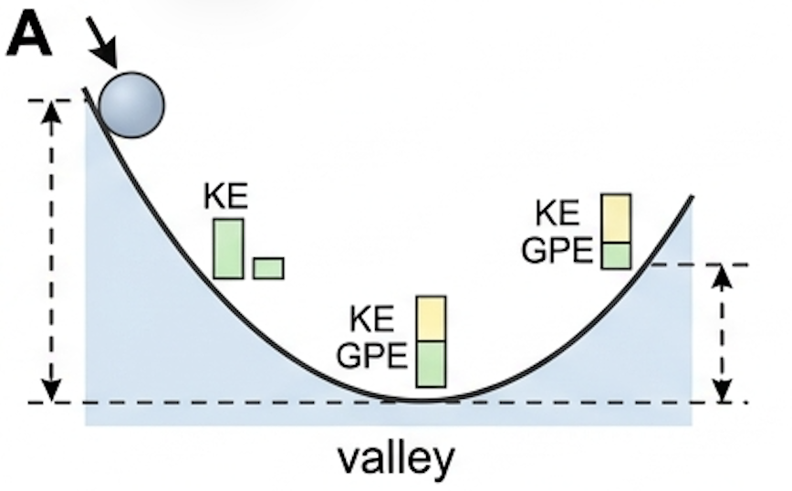
⚖️ The conservation statement, and its one condition
Syllabus statement: in the absence of frictional resistive forces, the total mechanical energy of a system is conserved. If mechanical energy is conserved, work is the amount of energy transformed between different forms of mechanical energy in a system — kinetic energy, gravitational potential energy and elastic potential energy.
In words: kinetic energy + gravitational potential energy + elastic potential energy = constant. But this is only true if there are no frictional (resistive) forces acting. Such forces are described as non-conservative. Conservative forces (gravitational forces, for example) conserve mechanical energy and do not involve the dissipation of energy.
Energy dissipation occurs in all mechanical systems to a greater or lesser extent, because of ever-present frictional / resistive forces (non-conservative forces). However, the equation above remains very useful for two things: predicting ‘ideal’ outcomes, and determining the amount of energy dissipated in other situations — the ideal answer minus the real answer is the energy lost.
📐 GPE ⇄ KE: the most common transfer
One of the most common examples of mechanical energy transfer is that between gravitational potential energy and kinetic energy. Assuming no resistive forces: change of gravitational potential energy = change of kinetic energy.
If the mass starts or ends with zero velocity during the time being considered, one term vanishes and the mass cancels:
This equation can be used to relate height with speed for any mass falling from rest, or any mass projected upwards to its highest point (assuming that gravity is the only force acting).
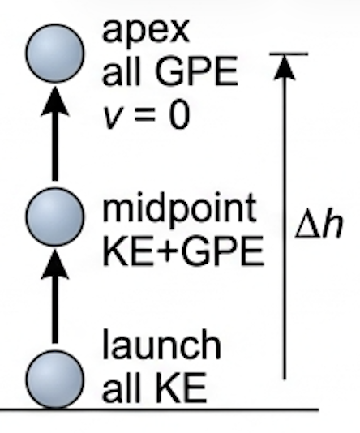
🌀 Elastic potential energy in the mix
A stretched or compressed spring that obeys Hooke's law stores elastic potential energy, and that store can be transformed into kinetic energy or gravitational potential energy just like any other term in the conservation equation.
Because the force needed to stretch a Hookean spring rises from zero to \(F=k\Delta x\), the average force over the extension is half the maximum force — which is why \(E_{\text{H}} = \tfrac{1}{2}k\Delta x^2\) and not \(k\Delta x^2\). Using \(E_{\text{H}} = Fs\) with the average force gives the same number.
📈 Graphs every examiner uses
| Graph type | Axes (X, Y) | Shape | What to read |
|---|---|---|---|
| Force–extension (Hookean) | extension \(\Delta x\), force \(F\) | Straight line through the origin, gradient \(k\) | Gradient = spring constant; area under the line = work done = \(E_{\text{H}}\) stored |
| Force–extension (real cord) | extension, force | Curve of increasing gradient — cord stiffens | Area under the curve = energy stored; not proportional, so \(\tfrac12k\Delta x^2\) cannot be used |
| Energy–height (ideal) | height \(h\), energy | GPE rises linearly, KE falls linearly, total is a flat line | Flat total ⇒ mechanical energy conserved; read either store at any height |
| Energy–distance (real) | distance travelled, energy | Total line slopes downwards | Drop in the total line = energy dissipated by friction |
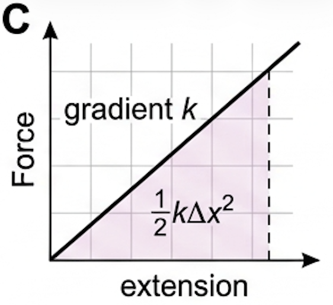
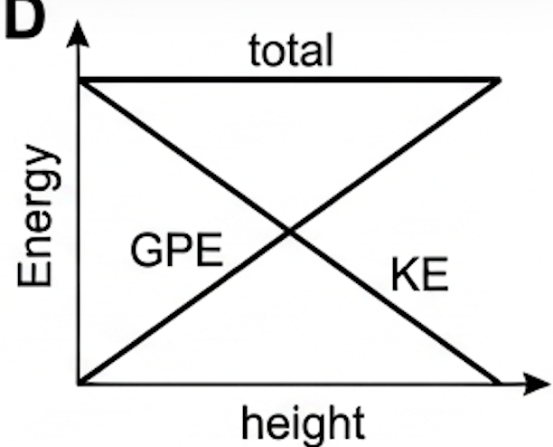
✍️ Worked example A3.8 – ball thrown upwards
A ball is thrown upwards with a speed of 23 m s⁻¹. Calculate the maximum height that it can reach.
✍️ Worked example A3.9 – ball fired horizontally by a spring
A ball of mass 7.8 g was fired horizontally by a spring, as shown in Figure A3.30. The spring has a spring constant of 620 N m⁻¹ and was pulled back 3.7 cm from its uncompressed length. (a) Calculate how much elastic potential energy was stored in the spring, assuming it obeys Hooke's law. (b) What average force was used to compress the spring? (c) Determine the maximum possible speed of the ball after the spring was released. (d) Explain why the actual speed will be less than your answer to part (c).
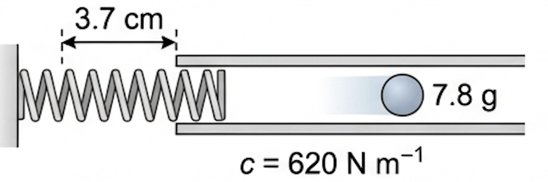
\(= 0.5 \times 620 \times 0.037^2 = 0.42\ \text{J}\)
\(v = 10\ \text{m s}^{-1}\)
✍️ Worked example A3.10 – box sliding down a slope
A box of mass 4.7 kg slid down a slope of vertical height 80 cm. (a) Calculate the gravitational potential energy of the box at the top of the slope (compared to the bottom). (b) Assuming the conservation of mechanical energy, what would the speed of the box be at the bottom? (c) The actual speed was measured to be 2.2 m s⁻¹ — explain why it was less than the answer to (b). (d) Determine how much energy was dissipated into the surroundings. (e) In what form(s) was this dissipated energy?
\(= 4.7 \times 9.8 \times 0.80 = 37\ \text{J}\)
\(v = 4.0\ \text{m s}^{-1}\). Note that this answer (which assumes no energy dissipation) would be the same for any mass on any slope, or a vertical fall.
\(= 37 - (0.5 \times 4.7 \times 2.2^2) = 26\ \text{J}\)
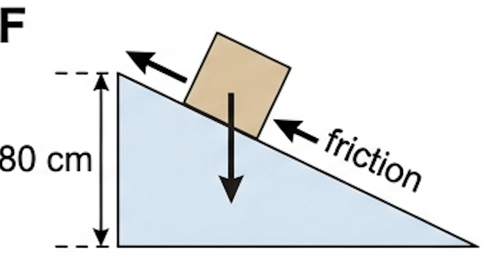
🔧 Real-world: crumple zones and landing mats
Crumple zones are designed to deform permanently in a collision. Rearranging \(Fs = \tfrac12 mv^2\): the kinetic energy to be removed is fixed by mass and speed, so the only way to reduce the force is to increase the distance over which the vehicle stops. The same logic explains foam landing pits, running shoes and airbags.
🚀 HL Extension – path independence and energy gradients
For a conservative force the work done between two points is independent of the path, so the work around any closed loop is zero and a potential energy function can be defined: \(\Delta E_{\text{p}} = -W = -\int F\,\mathrm{d}x\). Reading it backwards, the force is the negative gradient of the potential energy graph, \(F = -\dfrac{\mathrm{d}E_{\text{p}}}{\mathrm{d}x}\) — equilibrium sits where the \(E_{\text{p}}\)–\(x\) graph is flat, stable where it is a minimum.
Challenge: A mass on a spring has \(E_{\text{p}} = \tfrac12 kx^2\). What force does the gradient rule predict? (Answer: \(F = -kx\) — Hooke's law, restoring, pointing back to \(x=0\).)
⚠️ Trap corner – common mistakes
| Misconception | Correct view |
|---|---|
| "Energy is lost to friction, so conservation of energy fails" | Total energy is always conserved. Only mechanical energy falls — the rest becomes internal energy in the surfaces and surroundings. |
| "A heavier object hits the ground faster" | \(v=\sqrt{2g\Delta h}\) contains no mass. Ideal fall speed is mass-independent. |
| "Use the slope length in \(mg\Delta h\)" | \(\Delta h\) is the vertical height change only. |
| "Elastic PE is \(k\Delta x^2\) or \(F\Delta x\) with the maximum force" | \(E_{\text{H}} = \tfrac12 k\Delta x^2\); the average force is half the maximum for a Hookean spring. |
| "Momentum conservation and KE conservation go together" | Momentum is conserved in every collision; kinetic energy is only conserved in elastic ones. |
Complete the statements:
✓ \(v = 5.9\ \text{m s}^{-1}\) (maximum, because air resistance is neglected; mass is irrelevant)
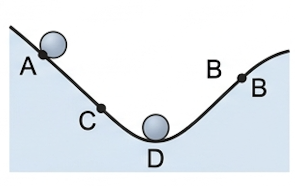
✓ Less GPE is therefore available at B than the ball started with at A, so \(mg\Delta h\) — and hence the height — is smaller.
✓ (b) At B the ball is momentarily at rest, then rolls back down, GPE transferring to KE, reaching maximum speed at the lowest point.
✓ It climbs to C, lower than B, and continues to oscillate with a smaller amplitude each time as more energy is dissipated.
✓ Finally all the mechanical energy has been dissipated as internal (thermal) energy and it comes to rest at D, the lowest point of the track.
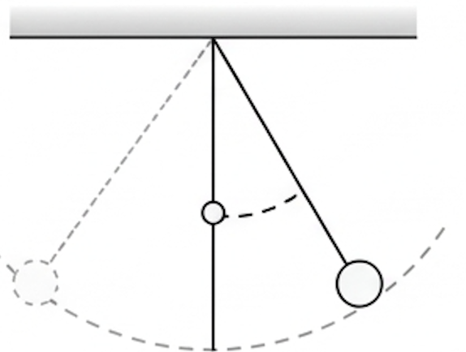
✓ Assuming mechanical energy is conserved, the bob rises to the same vertical height as its release point — so it stops on a tighter arc, at that same height, i.e. at a much larger angle to the vertical (close to horizontal from the peg).
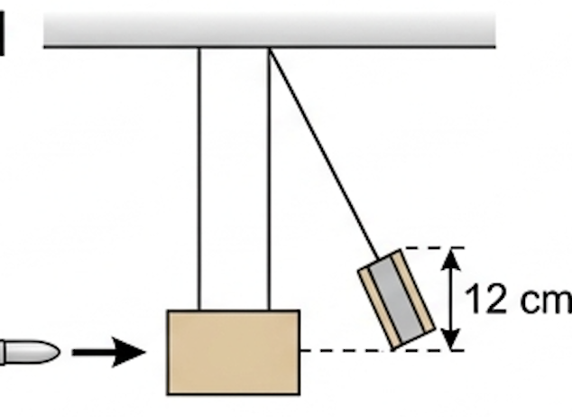
✓ (b) \(\Delta E_{\text{p}} = mg\Delta h = 1.23 \times 9.8 \times 0.12 = 1.4\ \text{J}\)
✓ (c) \(\tfrac12 mv^2 = 1.45\) ⇒ \(v^2 = \dfrac{2 \times 1.45}{1.23} = 2.35\) ⇒ \(v = 1.5\ \text{m s}^{-1}\) (equivalently \(v=\sqrt{2g\Delta h}=\sqrt{2\times9.8\times0.12}\))
✓ (d) Momentum before = momentum after: \(0.015 \times u = 1.23 \times 1.53\)
✓ \(u = 1.3 \times 10^{2}\ \text{m s}^{-1}\) (about 126 m s⁻¹)
✓ After: \(0.002 \times v = 0.012\) ⇒ \(v = 6.0\ \text{m s}^{-1}\) — the 2.0 g sphere reverses direction and moves to the left at 6.0 m s⁻¹.
✓ (b)(i) \(\tfrac12(0.010)(2.0)^2 + \tfrac12(0.002)(4.0)^2 = 0.020 + 0.016 = 0.036\ \text{J}\)
✓ (b)(ii) \(\tfrac12(0.002)(6.0)^2 = 0.036\ \text{J}\)
✓ (c) Yes — the kinetic energy after equals the kinetic energy before, so mechanical energy was conserved.
✓ (d) An elastic collision.
✓ After (the 8.6 g sphere has reversed): \(p = -(0.0086 \times 0.25) + (0.0057 \times 0.25) = -7.3 \times 10^{-4}\ \text{kg m s}^{-1}\) — agreement to about 3%, within experimental uncertainty.
✓ (b)(i) \(\tfrac12(0.0086)(0.39)^2 + \tfrac12(0.0057)(0.72)^2 = 6.5\times10^{-4} + 1.48\times10^{-3} = 2.1 \times 10^{-3}\ \text{J}\)
✓ (b)(ii) \(\tfrac12(0.0086 + 0.0057)(0.25)^2 = 4.5 \times 10^{-4}\ \text{J}\)
✓ (c) No — only about 21% of the kinetic energy remains; the rest was transformed to internal energy and sound.
✓ (d) An inelastic collision.
✓ \(E_{\text{H}} = mg\Delta h\) ⇒ \(\Delta h = \dfrac{0.99}{0.0012 \times 9.8} = 84\ \text{m}\)
✓ (b) The band is very light, so air resistance is large compared with its weight and dissipates much of the energy.
✓ Rubber does not behave as an ideal spring — energy is dissipated internally within the rubber as it contracts (hysteresis), heating the band.
✓ Some of the energy also goes into the band tumbling and vibrating rather than rising, so not all \(E_{\text{H}}\) becomes GPE of the centre of mass.
✓ (b) \(3.84 = \tfrac12 mv^2 = 0.5 \times 0.150 \times v^2\) ⇒ \(v^2 = 51.2\)
✓ \(v = 7.2\ \text{m s}^{-1}\)
✓ (c) A taut wire stores a lot of elastic potential energy, which is released almost instantaneously when it snaps.
✓ The ends whip through the air at several metres per second, and because a thin wire has a very small cross-sectional area the force is concentrated over a tiny area — it can cut skin or damage an eye.
✓ Precaution: use safety screens/goggles and keep clear of the plane of the wire when loading it.
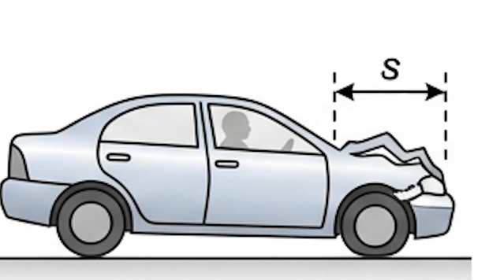
✓ \(\tfrac12 mv^2\) is fixed by the mass and the impact speed, so \(F\) and \(s\) are inversely related: \(F = \dfrac{mv^2}{2s}\).
✓ A crumple zone deforms, making the stopping distance \(s\) larger, which makes the average force \(F\) on the vehicle and its occupants smaller.
✓ A very stiff, rigid vehicle deforms only slightly (small \(s\)), so the force — and the deceleration experienced by the passengers — is much greater and more likely to cause serious injury.
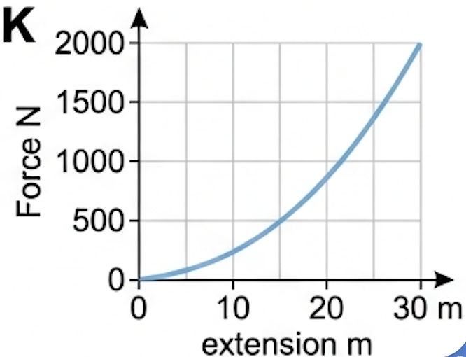
✓ (b) The area under a force–extension graph is the work done stretching the cord, i.e. the elastic potential energy stored in it.
✓ (c) The force increases with extension but not proportionally: the gradient increases, so the cord becomes progressively stiffer and does not obey Hooke's law over this range.
✓ (d) Count squares / find the area until it equals the energy the cord must absorb. Neglecting further loss of GPE, an area of \(1.6\times10^{4}\ \text{J}\) is reached at an extension of roughly 22 m.
✓ Better answer: the jumper also falls a further \(x\) metres while stretching the cord, releasing an extra \(mgx = 598x\) J, so the cord must store about \(1.6\times10^{4} + 598x\) J — giving an extension nearer 28–30 m.
✓ Credit for any clearly-shown area estimate with the reasoning stated.
✓ (b) No, not significant. The fall lasts about 1 s and reaches only \(v=\sqrt{2g\Delta h}\approx 9.7\ \text{m s}^{-1}\), well below terminal speed.
✓ At that speed the drag force on a human body is a small fraction of the 585 N weight, so the loss of energy is only a few per cent.
✓ (c) The foam must do work equal to the kinetic energy: \(Fs = E_{\text{k}}\)
✓ \(F = \dfrac{2786}{0.81} = 3.4 \times 10^{3}\ \text{N}\) (about 6× her weight — which is why the deformation distance matters)